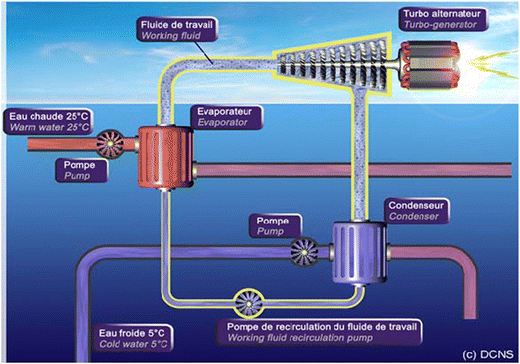

Activity 3: OTEC Power System

Ocean Thermal Energy Conversion (OTEC) utilizes the temperature difference between warm surface seawater and cold deep seawater to generate electricity. The provided diagram represents a closed-cycle OTEC system, where a working fluid such as ammonia circulates within a sealed system. Warm seawater evaporates the fluid in an evaporator, the vapor drives a turbine-generator to produce electricity, and then cold deep seawater condenses the vapor back into liquid form, completing the cycle.
Working Principle: The continuous cycle of evaporation and condensation based on the ocean’s thermal gradient ensures steady power generation. The minimum temperature difference required is about 20°C between the surface and deep seawater layers.
Advantages: Continuous 24/7 operation, renewable and clean energy source, and potential for combined freshwater and hydrogen production.
Disadvantages: High capital cost, complex underwater infrastructure, and location constraints (requires tropical regions with stable temperature gradients).
Site Selection Criteria: Best suited for tropical coastal regions where surface water temperatures are around 25–30°C and deep-water temperatures are about 5°C. Examples include areas near Hawaii, India, and the Caribbean.
Applications: Apart from electricity generation, OTEC systems can provide desalinated freshwater, cold seawater air-conditioning (SWAC), and support aquaculture. It holds promise for sustainable island and coastal community development.